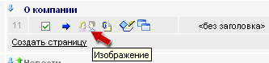
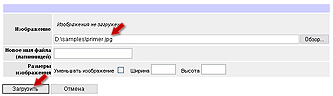
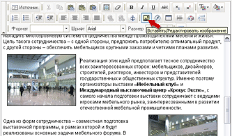
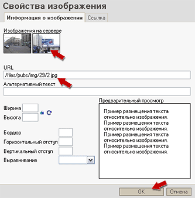
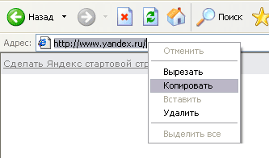
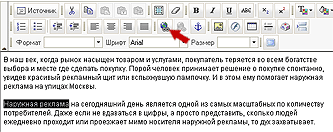
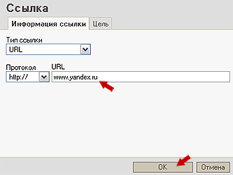

| 1. Подготовить на своем компьютере изображения к вставке на сайт. Основные требования: Формат: jpg, размер: не более 2 Мб |
|
| 2. Нажать на кнопку, указанную на рисунке: |  |
| 3. Загрузить изображение со своего компьютера на интернет-сервер при помощи следующей формы: |  |
| 4. Перейти в режим редактирования страницы, установить курсор в то место, куда будет вставляться изображение и нажать на указанную кнопку. |  |
| 5. В открывшемся окне выбрать нужное изображение, нажать на него для вставки специального кода, а затем нажать "ОК" |  |
| 6. Сохранить страницу, нажав кнопку "Сохранить" |
| 1. Открыть сайт (или страницу своего сайта), на который необходимо установить ссылку и скопировать адрес страницы в буфер обмена Windows. |  |
| 2. В режиме редактирования страницы выделить текст, который будет являться ссылкой и нажать на указанную кнопку: |  |
| 3. В открывшемся окне вставить ссылку из буфера обмена Windows и нажать "ОК" |  |
| 4. Сохранить страницу, нажав кнопку "Сохранить" |